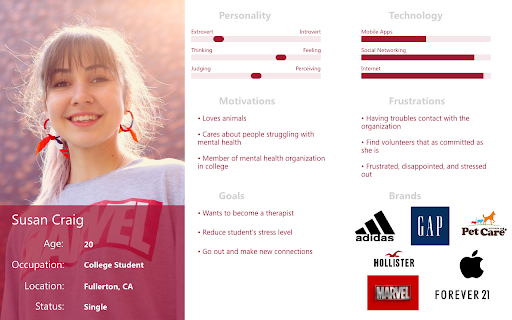

Project Name: Paws4Healing
Project Description: We believe redesigning the Paws 4 healing website to be more accessible, flexible, and credible for volunteers, members and the general public, will increase engagement with the community and donations for the cause.
Team Members: Danielle vanDaalenWetters, Khoi Nguyen, Jackie Kuniyoshi
Tools Used: Adobe XD, Invision, Photoshop, Trello, Google Suite, Miro
The Problem: Purpose: Paws4Healing, Inc strives to bring more awareness about the use and benefits of animal-assisted therapy to the greater Southern California community. As a design team, we saw an opportunity to create a more aesthetically pleasing design with an easier flow, focusing on the following key calls to action: community involvement, volunteering, and donations.
Challenges: Very outdated, non-responsive design with no adaptive features makes the site hard to navigate. Key features such as donation and volunteer information is not easily found.
The Solution: To solve our problem we did a complete rebrand changing the logo, colors, navigation, and brought the key call to actions to the forefront.
We launched an online survey, conducted in-person interviews, and interviewed Paws4healing’s President.
Our initial plan of action was to collect more information on participants’ donation and volunteer habits as Paws4Healing’s website has an outdated user flow for collecting donations. We learned that 61.9% of participants identify as being mid career working professionals and are most likely to donate money, which was aligned with our initial assumptions. We learned that participants are interested in knowing how their donations are being used, and want the information to be available to them. With this information, we worked on creating a user flow to showcase an inclusive and credible donation process.
For the in-person interviews, we focused on capturing feelings and emotions related to human and animal connections. We learned that people that have access to pets, experience feelings of happiness, relieved stress, and fulfillment. 50% of the participants were familiar with the term “therapy animals” but correlated it with services/benefits that “service animals” and “rescue animals” provide. With this information we knew we had to incorporate information about therapy animals on the re-designed website, and make the information accessible on how to register an animal as a therapy animal.
Towards the end of our research process, we were able to connect with the Paws4Healing president. This is when we learned the vast outreach that their organization has all over California and their strong relationship with the national organization PetPartners. Paws4Healing receives plenty of inquiries to do therapy animals visits at healthcare facilities, and their current challenge is balancing these types of visits with alternative light hearted events. The president shared her interest in gaining more opportunities to schedule therapy animal visits at college campuses or at corporate offices.
With the information collected through the survey, interviews, and stakeholder, we identified that the three call to actions we want to create on the re-designed website were: Donations, Volunteering/Registering Therapy Animals, and Scheduling Visits. However, with the information learned from the stake holder interview, we decided to change the direction of our main user flow from donations to scheduling.
We created three user personas based on the three call to actions: Community Involvement (Scheduling) , Volunteering, and Donating.
We emphasized creating the user flow for scheduling. The storyboard depicts a user navigating the current Paws4Healing website. Susan is unsuccessful in being able to schedule a therapy animal visit at her collect campus. And she was frustrated throughout the whole process as the current website does not have a clear user flow on how to contact Paws4Healing and inquire about scheduling visits.
We outlined what the re-designed website’s navigation would be and created a user flow for scheduling visits.
Search users favorite animals based on their zip code
Create a tracking page that shows the status of the scheduling request